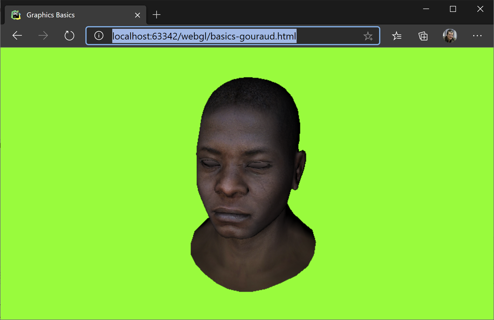
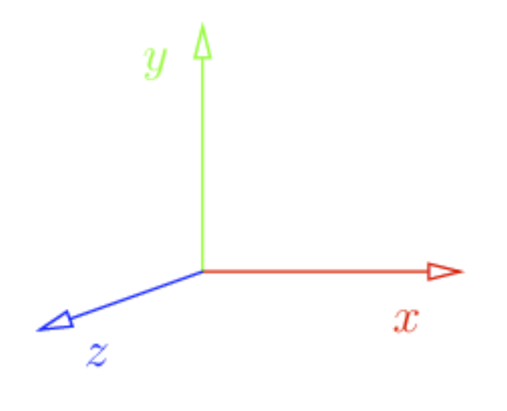
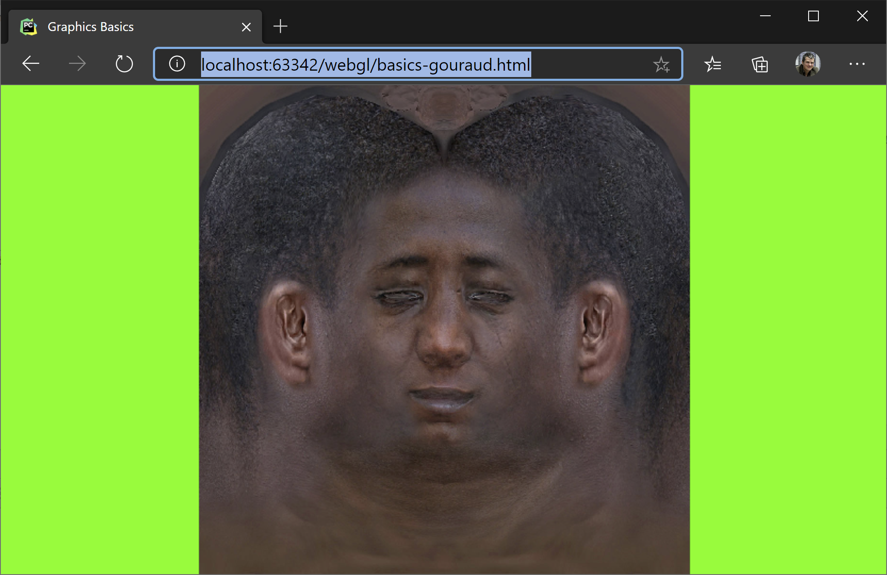
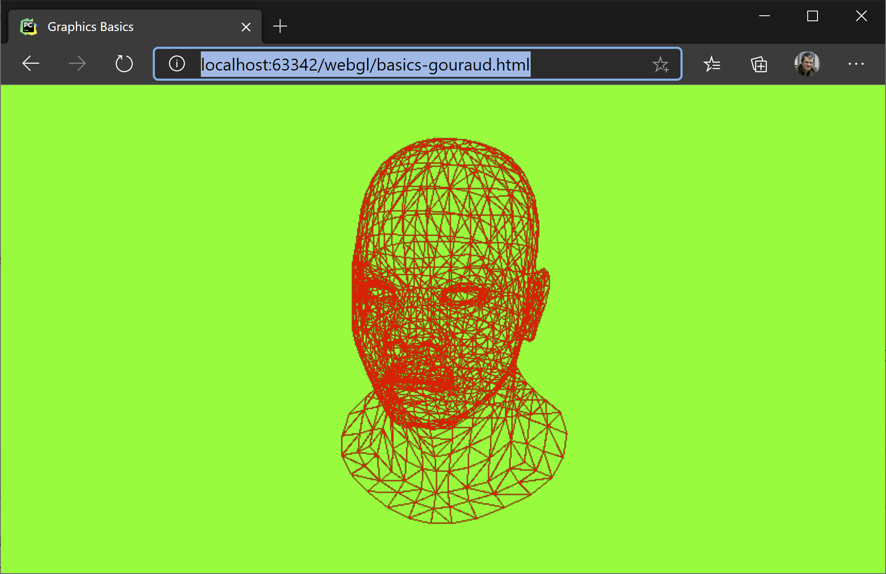
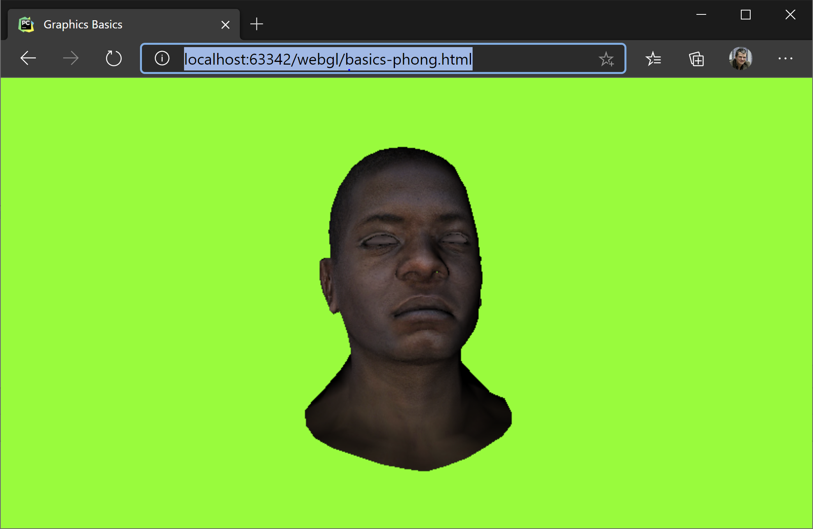

3D From Scratch
This post is about implementing a 3D renderer from scratch, with no help from any graphics or maths library. It is implemented in pure JavaScript and it follows roughly the first half of the excellent tiny renderer tutorial.
The End Result
We are going to build our software renderer to show this:

The features our software renderer suppors are:
- Model loading
- Phong (per pixel) lighting
- Triangle rasterization
- Model, camera, viewport transformations
- Wireframe rendering
- Texturing
- Z-Buffer
- Hidden face removal (backface culling)
In addition to these, we will build a small and probably buggy maths library. All the code is included in this file: basics-phong
Coordinate Systems
First and foremost, we will operate in the coordiate system with the z-axis pointing towards us, y-axis upwards and the x-axis rightwards.

In addition to that, the model we will load is oriented towards z-axis. Also, by convention, we will consider triangles defined as counter-clockwise. This will help us later determine what is the front and what is the the back face of the triangle.
Loading the model
The format for our model is standard: an indexed geometry, with a set of vertices, vertex normals and texture coordinates. Taking into consideration the counter-clockwise convention, here is how we define a quad.
function generateTexturedQuad(mesh){
mesh.vertices.push([-1, 1, 0])
mesh.vertices.push([-1, -1, 0])
mesh.vertices.push([1, 1, 0])
mesh.vertices.push([1, -1, 0])
mesh.faces.push([0, 0, 0, 1, 1, 1, 2, 2, 2], [2, 2, 2, 1, 1, 1, 3, 3, 3]);
mesh.txcoords.push([0, 1, 0]);
mesh.txcoords.push([0, 0, 0]);
mesh.txcoords.push([1, 1, 0]);
mesh.txcoords.push([1, 0, 0]);
// all normals pointing towards the camera
// in the case when 3d artists are not so kind,
// you can recompute the normal vectors as an average of normals to all
// facets incident to the vertex
mesh.vnormals.push([0, 0, 1]);
mesh.vnormals.push([0, 0, 1]);
mesh.vnormals.push([0, 0, 1]);
mesh.vnormals.push([0, 0, 1]);
if(mesh.worldTransform === undefined || mesh.worldTransform == null)
mesh.worldTransform = getIdentityMatrix(4);
}
async function loadAsset(diffuse, obj) {
myMesh = {
vertices: [],
txcoords: [],
vnormals: [],
faces: [],
diffuse: diffuse,
worldTransform: null,
};
generateTexturedQuad(myMesh);
}
Rendering this image also assumes the following are set:
viewportTransform = makeViewportTransform(cvs.width, cvs.height);
projectionTransform = getIdentityMatrix(4); // no projection
cameraTransform = makeIdentityCamMatrix(); // no camera transformation

Since projectionTransform and cameraTransform are identity matrices, it means that the only transformation in place is the viewportTransform. This transform takes a coordiante space defined by the rectangle x, y = [-1, 1], [-1, 1], with y pointing upwards, and transforms it to pixel on the screen coordiantes.
/**
* Transforms from [-1..1] to [0, w] and [h, 0] respectively.
*/
function makeViewportTransform(viewportWidth, viewportHeight){
// maintain aspect ratio
return [
viewportHeight/2, 0, 0, viewportWidth/2,
0, -viewportHeight/2, 0, viewportHeight/2,
// spread a bit the numbers in the zbuffer (can be 1, but let's make it more discrete).
// This is useful it we want to store the zbuffer as an integer instead of a float.
// This would give the resolution of the depth buffer, mapping -1, 1]
0, 0, 1024, 1024,
0, 0, 0, 1
]
}
It also transforms the z-buffer, but that is another chapter.
Wireframe Rendering
Before we move to shading triangles, let's first render our model in wireframe:

For this, let's look at our generateImage function and what it does if the wireframe parameter is set to true.
The first step is to clear the background and the z-buffer. For wireframe rendering we don't care about the z-buffer, but we do care about not drawing on top of an older image. So we put all pixels to green.
Another thing we care about is transforming our vertices from their world coordinates to their corresponding screen coordinates. For this we have a chain of transformations (matrix multiplications) we apply to each vertex. Transform transformsWordToSreen matrix takes a position in world coordinates and transforms it to [x, y, z] in screen space. We will use the x and y to put the pixel on the screen and z to know if it is the topmost pixel and thus not hidden by another pixel. In varrrayW we keep the vertices in world coordinates, in varray in screen coordinates.
The loop that follows generates the faces, the triangles of our model. As mentioned before, this is an indexed geometry so for each face we need to lookup by index the coresponding vertex in vertex array. We do the same for the normals and for the texture coordinates. These are not relevant for the wireframe rendering, but they are relevant for the next chapter when we shade the triangle. In the last loop, we draw the line.
function generateImage(wireframe=true){
// clear background and Z buffer:
clear(0x00, 0xff, 0x00);
if(myMesh == null)
return;
let triangles = [];
/* the following two lines are equivalent to the matrix transformation applied next
let varray = myMesh.vertices.map(v=>homogeneousTransform(vectorMultiply(projectionTransform, v)));
varray = varray.map(v=>homogeneousTransform(vectorMultiply(viewportTransform, v)));
*/
//multiply first with transform because the vector appears later several times
let transformsWorldToScreen = chainMultiplyMatrix([viewportTransform, projectionTransform, cameraTransform])
// tranform the vertices to worldspace and then to screen
let varrayW = myMesh.vertices.map(v => homogeneousTransform(vectorMultiply(myMesh.worldTransform, v, true)));
let varray = varrayW.map(v => homogeneousTransform(vectorMultiply(transformsWorldToScreen, v, true)));
// transform the normals to world
// isPosition == false so we don't translate
let narrayW = myMesh.vnormals.map(v => normalize(vectorMultiply(myMesh.worldTransform, v, false)));
// each face has 9 indices, only the 0, 3, 6 are vertex index
for(let i = 0; i < myMesh.faces.length; i++){
// index in the vertex buffer
let v0 = myMesh.faces[i][0];
let v1 = myMesh.faces[i][3];
let v2 = myMesh.faces[i][6];
// texture vertex index
let tx0 = myMesh.txcoords[myMesh.faces[i][1]];
let tx1 = myMesh.txcoords[myMesh.faces[i][4]];
let tx2 = myMesh.txcoords[myMesh.faces[i][7]];
// vertex normal coords world space
let vn0 = narrayW[myMesh.faces[i][2]].slice(0, 3);
let vn1 = narrayW[myMesh.faces[i][5]].slice(0, 3);
let vn2 = narrayW[myMesh.faces[i][8]].slice(0, 3);
// world space backface culling
let faceNormal = normalize(crossProduct3(
subtractVector(varrayW[v2], varrayW[v0]),
subtractVector(varrayW[v1], varrayW[v0])
));
let visible = dot(cameraDir, faceNormal) >= 0;
if(visible || wireframe) {
triangles.push([varray[v0], varray[v1], varray[v2], vn0, vn1, vn2, tx0, tx1, tx2]);
}
}
if(wireframe) {
// TODO: remove duplicated lines, each line is drawn several times
for (let i = 0; i < triangles.length; i++) {
let t = triangles[i];
drawLineV(t[0], t[1], 0xff, 0, 0);
drawLineV(t[1], t[2], 0xff, 0, 0);
drawLineV(t[2], t[0], 0xff, 0, 0);
}
}
else{
for(let i=0; i<triangles.length; i++){
let t = triangles[i];
drawTriangle(...t);
}
}
}
PutPixel and Line Drawing
As mentioned before, we don't use any library for this demo. So we will implement our drawLine from scratch. Here it is how it goes. screenBuffer is our pixel matrix, organized as RGBA, each one byte in length.
function putPixel(x, y, r=0xff, g=0x00, b=0x00) {
const idx = (Math.round(y) * screenBuffer.width + Math.round(x)) * 4;
screenBuffer.data[idx + 0] = r;
screenBuffer.data[idx + 1] = g;
screenBuffer.data[idx + 2] = b;
screenBuffer.data[idx + 3] = 0xff;
}
function drawLine(x0, y0, x1, y1, r, g, b) {
// no line
if (x0 === x1 && y1 === y0)
return;
// step
let step = 1.0 / Math.max(Math.abs(x0 - x1), Math.abs(y0 - y1));
for(let i = 0; i <= 1; i+= step){
let x = x0 + i * (x1-x0);
let y = y0 + i * (y1-y0);
putPixel(x, y, r, g, b);
}
}
Positions and Directions in Homogenous Coordinates
In order to be able to add a rotation, a translation and a projection in a single matrix multiplication step, we extend our [x, y, z] notion of a point in 3D space to [x, y, z, w], which is congruent to the [x/w, y/w, z/w, 1]. This division is, in fact, a projection from the 4D space to the 3D space.
For orthogonal transformations, e.g. world-space transformations, vectors that represent points have w == 1 and vectors that represent directions, defined as p1 - p2, have their w == 0.
Rendering Full Triangles
The most exciting part of our blog post is about rendering full triangles. Before we dive into the actual shading, let's say the obvious that we only care about the triangles that are facing us. So we do a simple test. This test is called back-face culling. This is why counter-clockwise convetion for defining faces is important. If we weren't following it, we'd have the normals oriented in the opposite direction.
// world space backface culling
let faceNormal = normalize(crossProduct3(
subtractVector(varrayW[v2], varrayW[v0]),
subtractVector(varrayW[v1], varrayW[v0])
));
let visible = dot(cameraDir, faceNormal) <= 0;
We compute the face normal using the crossProduct3 function which, given a plane (3 points), computes a fourth vector perpendicular to the others. Then we check to see if the face normal and the cameraDir face in the opposite direction. This is what the dot product does.
The remaining part is covered in the drawTriangle function. The algorithm is very simple and it fits very well on massively parallel hardware as all triangles can be processed in parallel.
- Find a bounding box for our triangle
- Shade each point from the bounding box only if inside the triangle
The parameters for the function are:
- v1, v2, v3 - triangle vertices transformed in screen space
- vn1, vn2, vn3 - vertex normals
- tx0, tx1, tx2 - texture coordinates for each vertex
function drawTriangle(v1, v2, v3, vn1, vn2, vn3, tx0, tx1, tx2){
// find the bounding box
let bb = [v1[0], v1[1], v1[0], v1[1]];
let v = [v2, v3];
for (let i = 0; i < v.length; i++){
bb[0] = Math.floor(Math.min(bb[0], v[i][0]));
bb[1] = Math.floor(Math.min(bb[1], v[i][1]));
bb[2] = Math.ceil(Math.max(bb[2], v[i][0]));
bb[3] = Math.ceil(Math.max(bb[3], v[i][1]));
}
// check if the point is inside the triangle
for(let i = bb[0]; i <= bb[2]; i++)
for(let j = bb[1]; j <= bb[3]; j++){
const stu = toBarycentricCoords(i, j, v1, v2, v3);
if(insideTriangle(stu[0], stu[1], stu[2])) {
// interpolate over the z coord
const pixelZWorld = stu[0] * v1[2] + stu[1] * v2[2] + stu[2] * v3[2];
const zBufferIndex = zBufferGetIdx(i, j);
if (pixelZWorld >= zBuffer[zBufferIndex]){
zBuffer[zBufferIndex] = pixelZWorld;
// use again the barycentric coords to interpolate in the texture
// matrix multiplication STU * [tx0, tx1, tx2]
const tX = dot(stu, [tx0[0], tx1[0], tx2[0]]);
const tY = dot(stu, [tx0[1], tx1[1], tx2[1]]);
[tr, tg, tb] = getTextureData(tX, tY);
// interpolate normals (all in world space)
const n0 = dot(stu, [vn1[0], vn2[0], vn3[0]]);
const n1 = dot(stu, [vn1[1], vn2[1], vn3[1]]);
const n2 = dot(stu, [vn1[2], vn2[2], vn3[2]]);
let intensity = -dot(lightDir, [n0, n1, n2]);
let c = Math.max(0, intensity);
putPixel(i, j, c * tr, c * tg, c * tb);
//putPixel(i, j, 255 * c , 255 * c , 255 * c ); // draw only the light intensity
}
}
}
}
The most interesting point of this function is transforming each pixel inside the triangle to its barycentric coordinates. These coordiantes are 3 numbers, s, t, u, which give weights to how close the point is to each vertex. That is, v1 would have barycentric coordiantes of 1, 0, 0, v2 would have its barycentric coordinates at 0, 1, 0 and v3 at 0, 0, 1. Obviously, s + t + u == 1 and they allow linear interpolation for each pixel based on values stored in the face vertices. If a pixel is outside of our triangle, at least of its barycentric coordinates is negative.
So what do we do if the pixel is inside the triangle:
-
We check if the pixel is not under another pixel previously rendered (z-buffer check). We can simply interpolate the
z valuefor the pixel and compare it with what is stored in the z-buffer. Since everything is already projected on the screen, we take the z directly without any other transformation. -
We interpolate between the texture coordiantes for each vertex and take the corresponding diffuse value.
-
We interpolate between the normals of each vertex to compute a pixel normal and
dotit with the light direction to see how much light falls on that point. This is calledPhong Shading, as opposed toGouraud Shadingwhere the light is calculated per vertex and then interpolated over the surphace.
What Else?
Building the camera matrix, which is similar to the gluLookAt from OpenGL. The two functions are interesting becasue they show two things:
- How to make the inverse of an homogenous orthogonal matrix based on the transposed rotation.
- How to extract the axes of abject. Axes are oriented on columns.
function inverseOrthogonalMatrix(mtx){
// inverse is the transpose of the rotation part and `-` the translation
let x = mtx.slice(0, 4);
let y = mtx.slice(4, 8);
let z = mtx.slice(8, 12);
let rotate = [
x[0], y[0], z[0], 0,
x[1], y[1], z[1], 0,
x[2], y[2], z[2], 0,
0, 0, 0, 1
];
let translate = [
1, 0, 0, -x[3],
0, 1, 0, -y[3],
0, 0, 1, -z[3],
0, 0, 0, 1
]
// inverse = a) -translate followed by b) -rotate
return matrixMultiply(rotate, translate);
}
function makeCameraTransform(camPos, camUp, camLookAt){
// camera looks towards -z, so here we need to inverse camCenter and camPos
let z = normalize(subtractVector(camPos, camLookAt))
let y = normalize(camUp);
let x = crossProduct3(y, z);
y = crossProduct3(z, x);
let camWorld = [
x[0], y[0], z[0], camPos[0],
x[1], y[1], z[1], camPos[1],
x[2], y[2], z[2], camPos[2],
0, 0, 0, 1,
]
cameraDir = [z[0], z[1], z[2]];
let ret = inverseOrthogonalMatrix(camWorld);
//let identity = matrixMultiply(ret, camWorld); // debug
return ret;
}
The depth buffer is initialized to the same size as the whole canvas, based on floats. For faster computations it can be initialized to integer numbers, but then care must be taken to defining the resolution in the viewport matrix.
zBuffer = new Float32Array(cvs.width * cvs.height);
Making the render buffer is done as follows:
function makeFullScreenCanvas(){
const cvs = document.getElementById('myCanvas');
cvs.width = window.innerWidth;
cvs.height = window.innerHeight;
const ctx = cvs.getContext("2d");
screenBuffer = ctx.createImageData(cvs.width, cvs.height);
zBuffer = new Float32Array(cvs.width * cvs.height);
viewportTransform = makeViewportTransform(cvs.width, cvs.height);
projectionTransform = makeProjectionTransform(3);
cameraTransform = makeCameraTransform([0.2, 0.2, 0.8], [0, 1, 0], [0, 0, 0]);
render();
}
And, before we go, let's have a look once again at our model with all the transformations applied - this should be the output of running the code from github.
